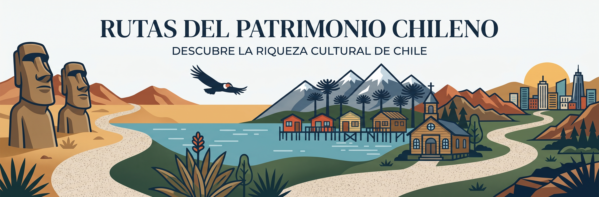
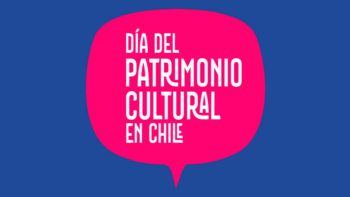

Fundación Memoria Viva difunde lugares y expresiones que forman parte del patrimonio natural y cultural de Chile.
Parques, reservas y paisajes protegidos
Ver categoría →

Monumentos, oficios y tradiciones